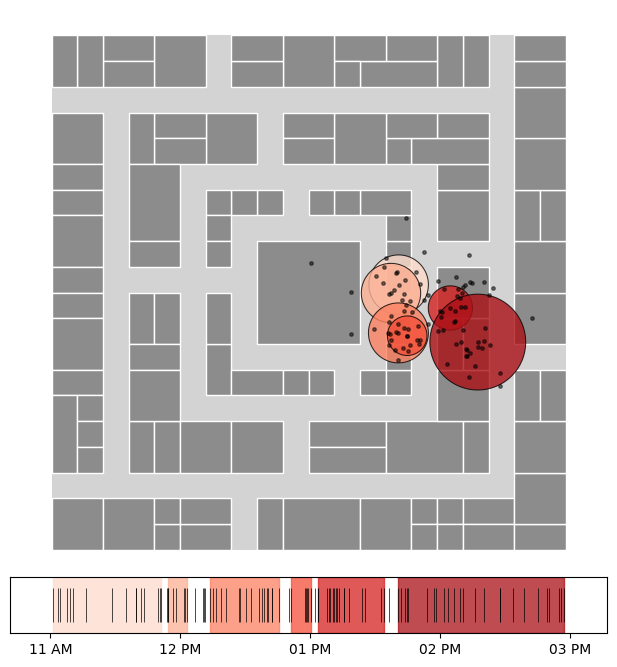

TADBSCAN Stop Detection
The second stop detection algorithm implemented in nomad is an adaptation of DBSCAN. Unlike in plain DBSCAN, we also incorporate the time dimension to determine if two pings are “neighbors”. This implementation relies on 3 parameters
time_threshdefines the maximum time difference (in minutes) between two consecutive pings for them to be considered neighbors within the same cluster.dist_threshspecifies the maximum spatial distance (in meters) between two pings for them to be considered neighbors.min_ptssets the minimum number of neighbors required for a ping to form a cluster.
Notice that this method also works with geographic coordinates (lon, lat), using Haversine distance.
[1]:
%matplotlib inline
import matplotlib
import matplotlib.pyplot as plt
# Imports
import nomad.io.base as loader
import geopandas as gpd
from shapely.geometry import box
from nomad.stop_detection.viz import plot_stops_barcode, plot_time_barcode, plot_stops, plot_pings
import nomad.stop_detection.dbscan as DBSCAN
# Load data
import nomad.data as data_folder
from pathlib import Path
data_dir = Path(data_folder.__file__).parent
city = gpd.read_parquet(data_dir / 'garden-city-buildings-mercator.parquet')
outer_box = box(*city.total_bounds)
filepath_root = 'gc_data_long/'
tc = {"user_id": "gc_identifier", "x": "dev_x", "y": "dev_y", "timestamp": "unix_ts"}
# Density based stop detection (Temporal DBSCAN)
users = ['admiring_brattain']
traj = loader.sample_from_file(filepath_root, format='parquet', users=users, filters=('date','==', '2024-01-01'), traj_cols=tc)
stops_tadb = DBSCAN.ta_dbscan(traj,
time_thresh=60,
dist_thresh=10,
min_pts=3,
complete_output=True,
traj_cols=tc)
[2]:
fig, (ax_map, ax_barcode) = plt.subplots(2, 1, figsize=(6,6.5),
gridspec_kw={'height_ratios':[10,1]})
gpd.GeoDataFrame(geometry=[outer_box], crs='EPSG:3857').plot(ax=ax_map, color='#d3d3d3')
city.plot(ax=ax_map, edgecolor='white', linewidth=1, color='#8c8c8c')
plot_stops(stops_tadb, ax=ax_map, cmap='Reds')
plot_pings(traj, ax=ax_map, s=6, color='black', alpha=0.5, traj_cols=tc)
ax_map.set_axis_off()
plot_time_barcode(traj['unix_ts'], ax=ax_barcode, set_xlim=True)
plot_stops_barcode(stops_tadb, ax=ax_barcode, cmap='Reds', set_xlim=False, timestamp='unix_ts')
plt.tight_layout(pad=0.1)
plt.show()
